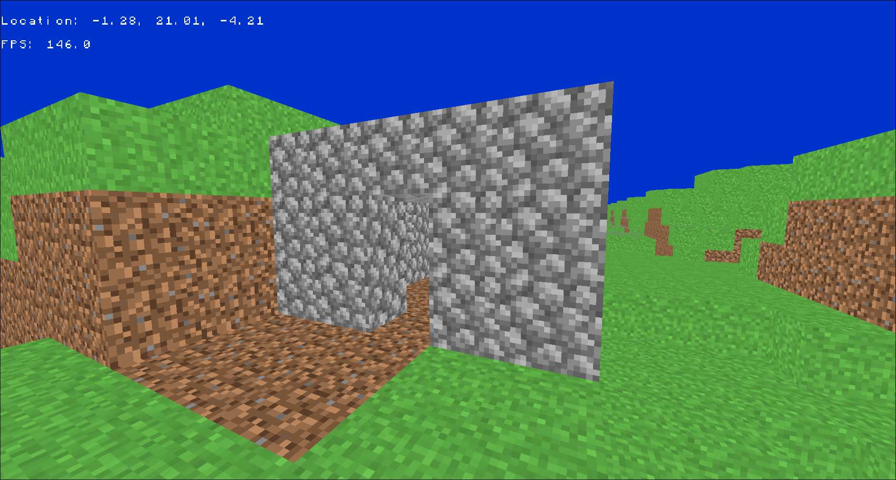

For my Object Oriented Programming (OOP) final project, we were tasked with creating a program that showed off at least five OOP concepts. My homework partner had experience in programming Minecraft plugins, and with my experience in graphics, we decided to create a Minecraft clone. We used the Lightweight Java Game Library (LWJGL), which provided bindings for windowing, inputs, and OpenGL, and sl4j for logging.
Because of the scope of this project, we needed to implement several OOP patterns with a data oriented design pattern.
